Pinned upstream examples alongside Angular. Thumbnails fit this gallery; click an image to inspect its original host width. Intentional differences and acceptance status are recorded in NG11_LINE_CHART.md.
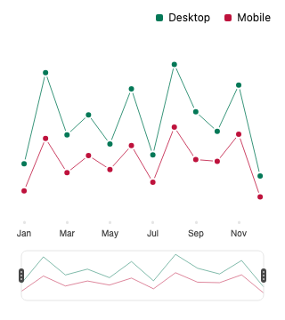
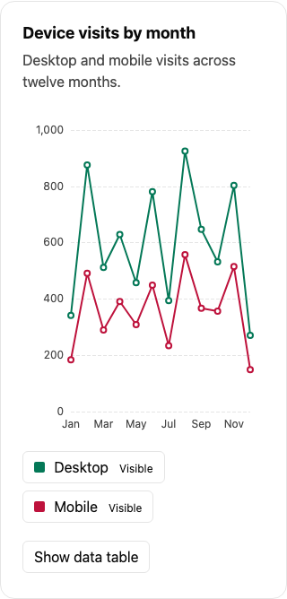
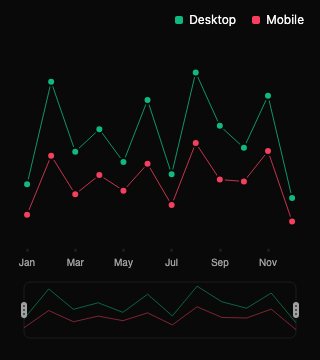
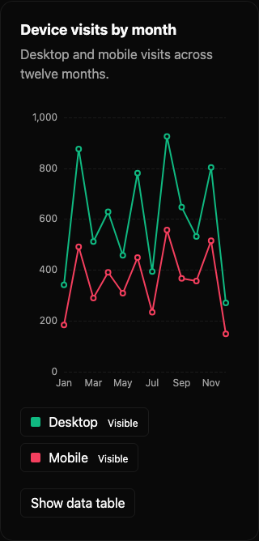
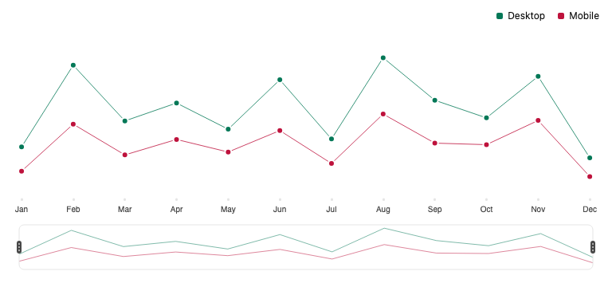
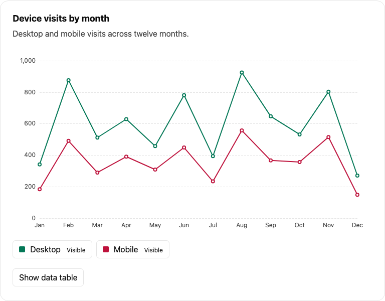
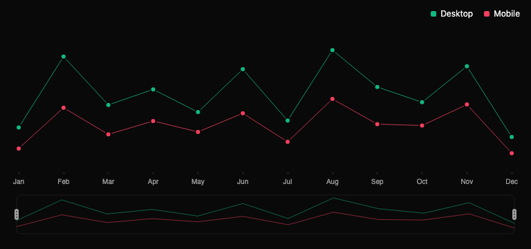
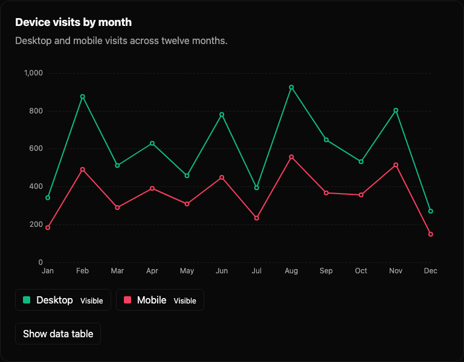
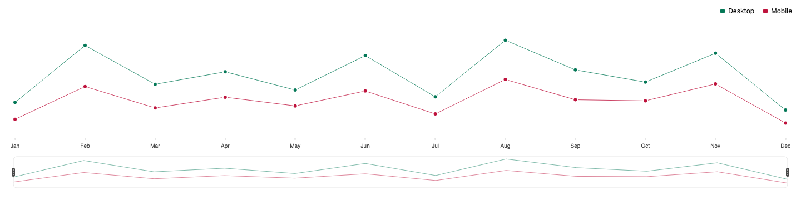
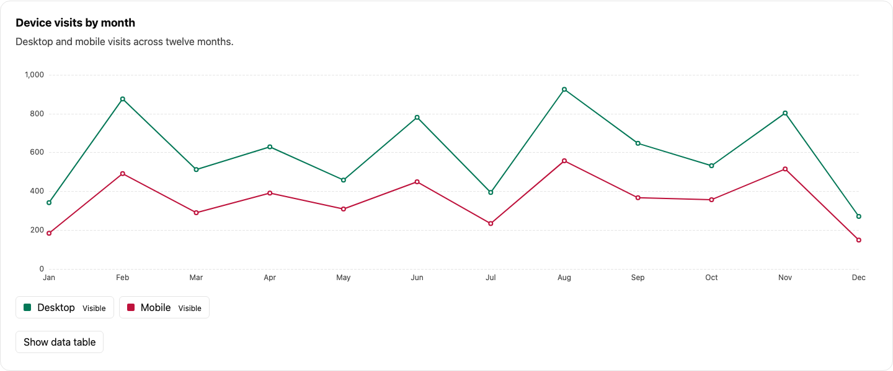
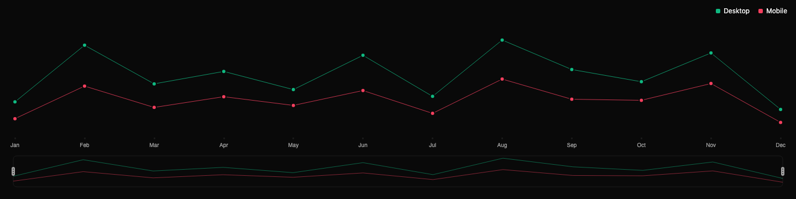
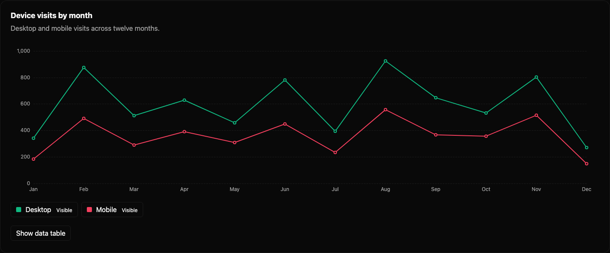
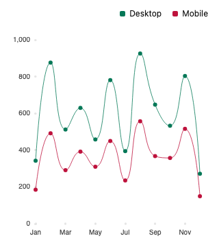
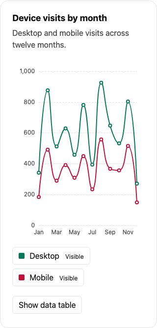
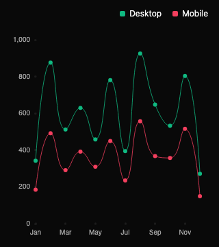
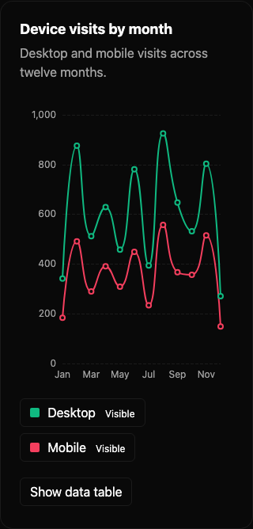
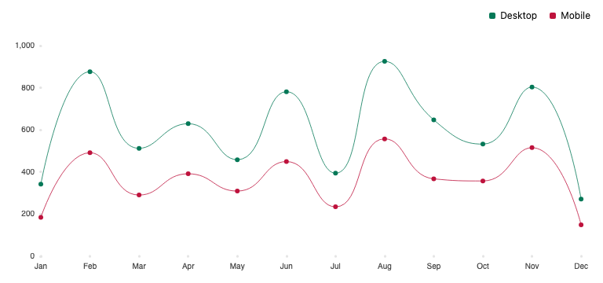
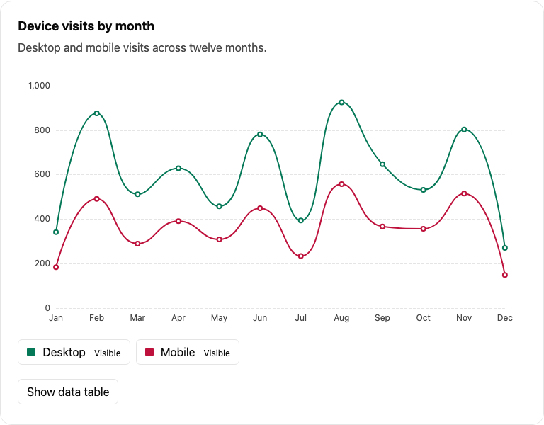
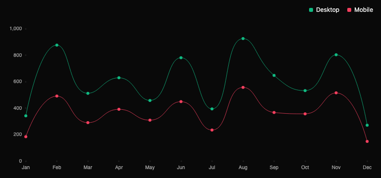
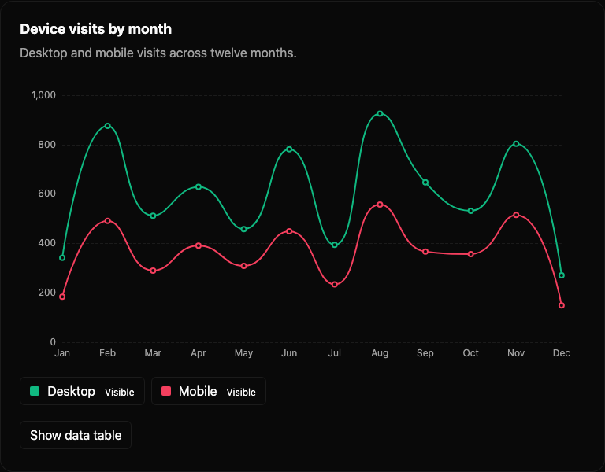
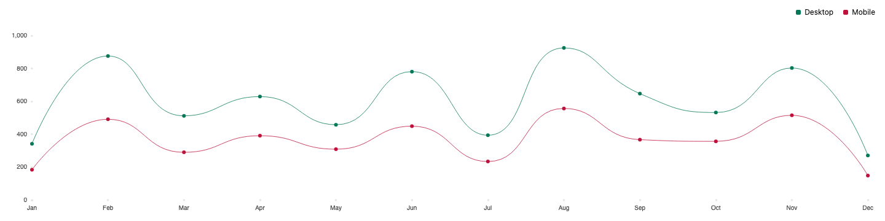
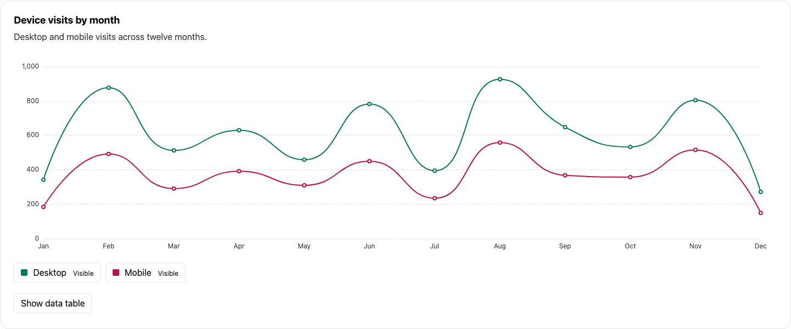
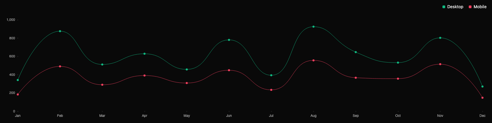
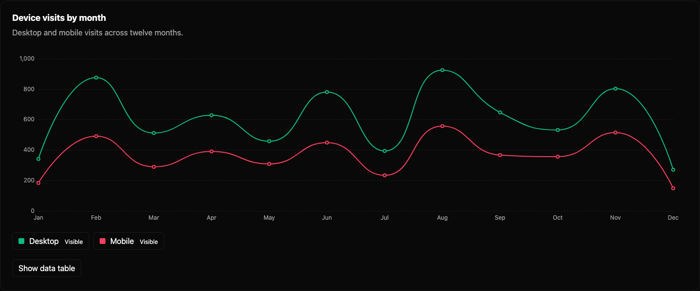
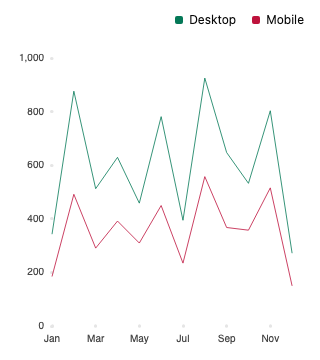
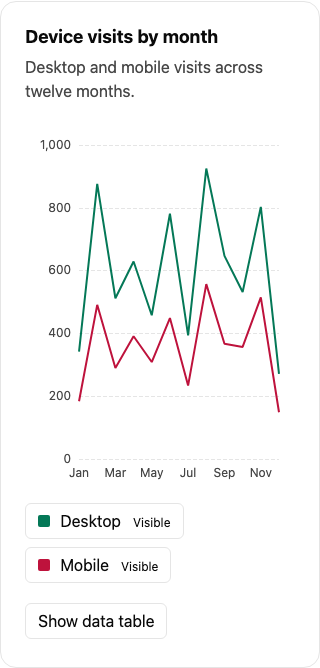
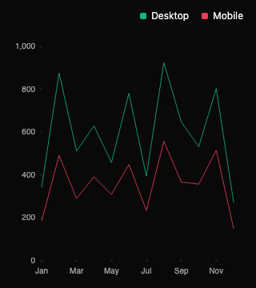
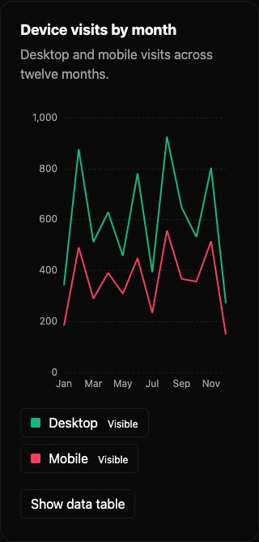
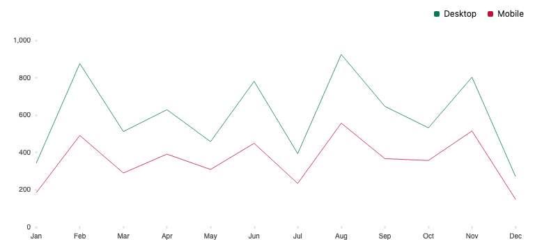
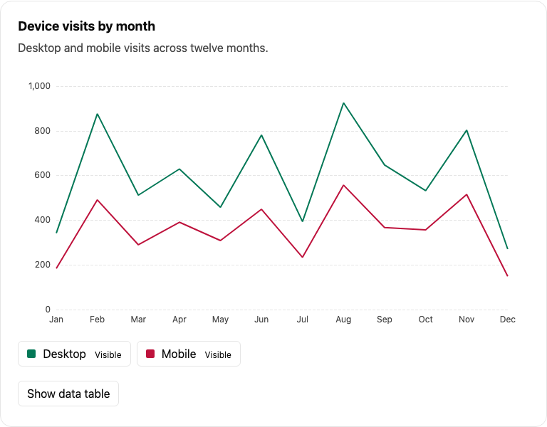
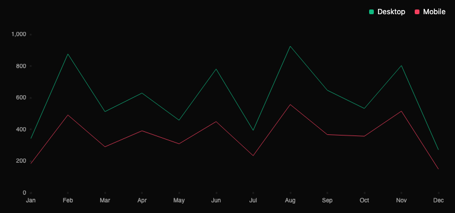
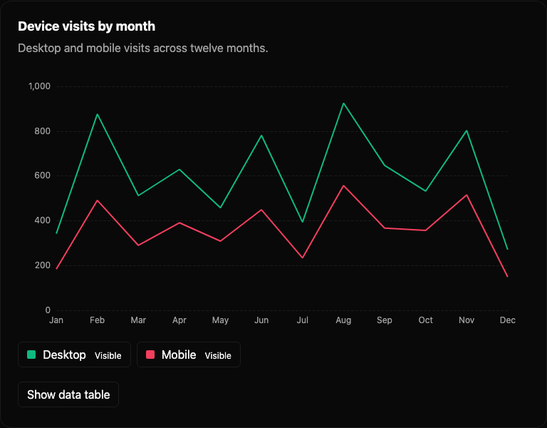
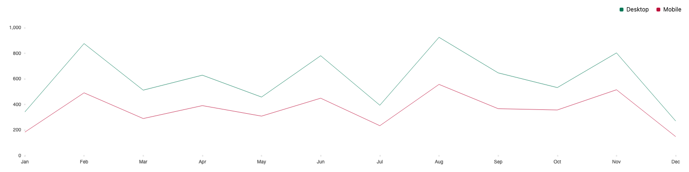
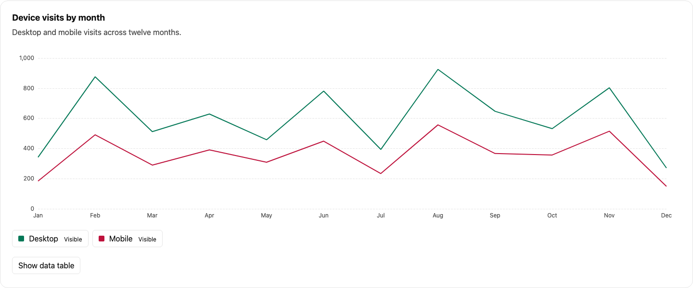
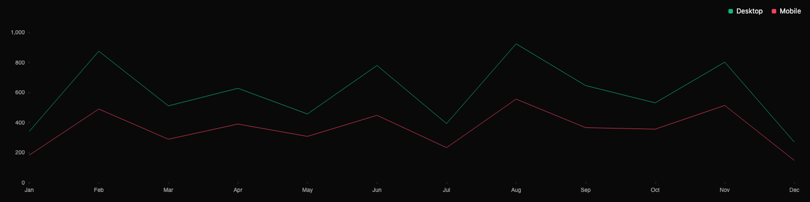
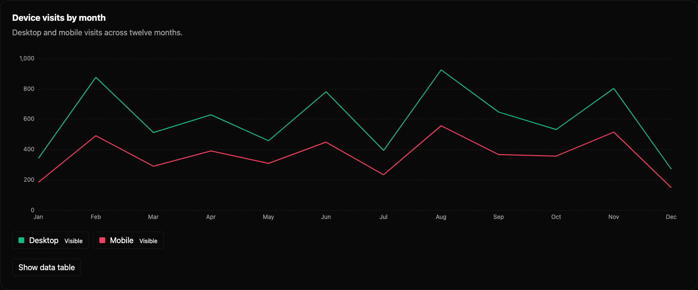